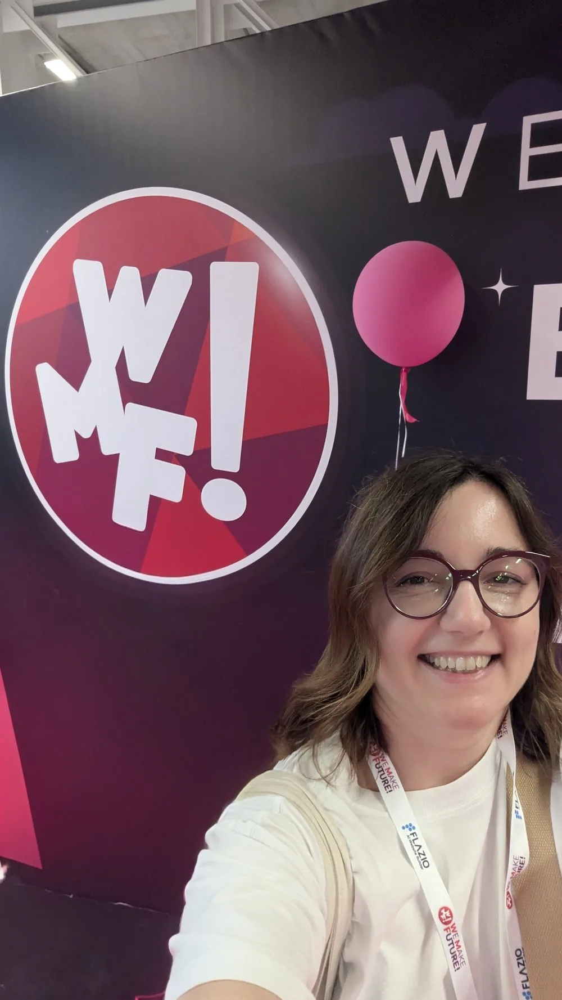

Ho iniziato nel web marketing oltre 10 anni fa, quando le campagne pay-per-click erano ancora una cosa di nicchia e Analytics aveva un'interfaccia che oggi farebbe ridere. Ho imparato tutto sul campo, lavorando su account reali, con budget reali e clienti che volevano risultati reali.
Ho chiamato questo progetto Optimisad perché racconta esattamente quello che faccio: ottimizzare le Ads. Non creare campagne e lasciarle girare. Non vendere pacchetti preconfezionati. Ottimizzare con metodo, con dati, con continuità.
Negli anni mi sono specializzata in un'area molto precisa: l'ecosistema Google. Google Ads, Google Analytics, Google Tag Manager, ricerca di parole chiave, analisi del comportamento utente sul web. Non faccio tutto. Faccio questa cosa, e la faccio bene.
Non mi piace fare cose a caso. Prima di toccare qualsiasi campagna, studio il mercato, analizzo le parole chiave, capisco chi sono i tuoi concorrenti online e dove stai perdendo opportunità. Solo dopo si passa all'azione.
Amo i dati. Ma i dati da soli non servono a niente: quello che mi appassiona è trasformarli in decisioni. Leggere un report di Analytics e capire perché gli utenti abbandonano una pagina. Vedere un grafico di Ads e capire quale annuncio merita più budget. Questo è il lavoro che preferisco.
Per anni ho lavorato solo tramite passaparola. I clienti continuavano a tornare e a mandarmi nuovi progetti. Ora ho deciso di strutturarmi con Optimisad, ma senza stravolgere quello che funziona: lavoro sempre da sola, seguo personalmente ogni progetto, e non delego a collaboratori junior ciò che mi hai chiesto di fare tu.
Questo significa che hai sempre a che fare con me: con Julia. Non con un account manager. Non con uno stagista. Con me.
La trasparenza vale anche in questo senso. Non mi occupo di:
Se hai bisogno di queste cose, te lo dico subito e, se posso, ti indico professionisti di fiducia.